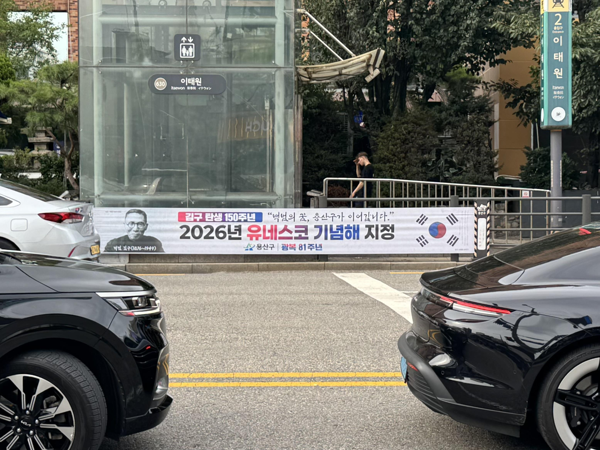

용산구, 광복 81주년·김구 탄생 150주년 맞아 현수막 20곳 홍보
유네스코 기념해, 효창공원 깃든 독립정신 구민과 함께

[시사포커스 / 김재록 기자] 서울 용산구(구청장 김경대)가 제81주년 광복절과 유네스코 공식 지정 '김구 탄생 150주년 기념해'를 맞아 백범 김구 선생의 애국정신과 광복의 역사적 의미를 알리는 홍보 현수막을 지난 10일 설치했다고 밝혔다. 현수막은 지역 내 저단형 공공현수막 지정게시대 20곳에 걸어 광복절 주간 동안 운영되며, '백범의 꿈, 용산구가 이어갑니다'라는 문구를 담아 선열들의 숭고한 뜻을 구민과 함께 기억하는 계기를 마련한다. 앞서 지난해 제43차 유네스코 총회는 2026년을 '김구 탄생 150주년 기념해(150th anniversary of the birth of Kim Koo)'로 공식 지정한 바 있어 국제사회도 김구 선생의 독립·평화 정신의 역사적 가치를 인정했다.
용산구에 따르면, 지역 내 효창공원(국가유산)에는 김구 선생을 비롯해 윤봉길·이봉창·백정기 의사와 대한민국임시정부 요인 이동녕·차리석·조성환 선생의 유해가 안장돼 있으며, 안중근 의사의 가묘도 마련돼 있다. 광복 이후 김구 선생이 직접 독립운동가들의 유해를 이곳에 봉안하며 효창공원은 대한민국 독립운동사를 상징하는 공간으로 자리잡았다. 김경대 용산구청장은 "백범 김구 선생이 잠든 효창공원을 품고 있는 용산구는 독립운동의 역사를 계승해야 할 특별한 책임과 사명을 지닌 도시"라며 "광복 81주년과 김구 탄생 150주년 유네스코 기념해를 맞아 더 많은 분들이 효창공원을 찾아 선열들의 희생과 헌신을 기억하고 나라 사랑 정신을 함께 되새기길 바란다"라고 밝혔다.
효창공원에서는 김구 선생 묘역을 비롯해 삼의사 묘역, 대한민국임시정부 요인 묘역, 의열사, 백범김구기념관 등을 둘러볼 수 있다. 용산구는 광복절 주간 현수막 홍보를 통해 구민들이 독립운동가들의 숭고한 희생을 기억하고 애국정신을 되새기는 기회로 삼는 한편, 더 많은 시민이 효창공원을 직접 방문해 역사 현장을 체험하기를 기대하고 있다.